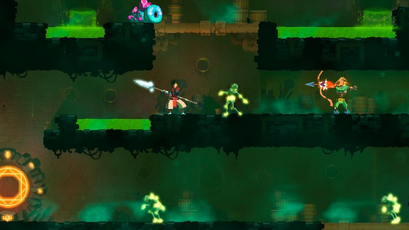
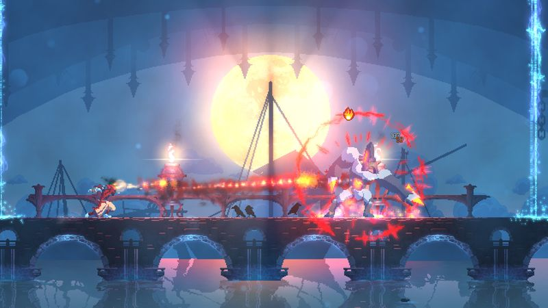

The thirty-second version
Twenty minutes at a time, forever.
Every death teaches me something. Mostly that I should have parried.
Dead Cells is the roguelite we default to when nobody wants to commit to a save file. Runs last twenty to forty minutes, unlocks stick, and the combat is the sharpest 2D melee this side of Hollow Knight. It leans harder on twitch than some of its peers, so if you like your action turn-based, this won't convert you. If you like a good dash and a real parry, this is your new home.
Okay, what is this thing?
You are a green goo that stitches itself into a headless corpse and picks up a rusty sword. Then you die, and become a new green goo, and pick up a slightly better sword. Somewhere between the first and fiftieth run this stops being a joke and starts being a very tight little metroidvania that gives you permanent shortcuts, permanent gear, and permanent grievances against a specific type of archer.
Runs are linear-branching. You always start in Prisoner's Quarters, but which biome you pick next changes the weapons, mutations, and boss you'll see. Combat is a shield-and-dodge affair with a real parry window, dual-wielded weapons on the fly, and mutations that turn your build into small essays. There are a lot of DLC areas now, and the game is generous about letting you skip the ones you dislike. We approve.


Why it escaped the group chat
- Every run generates a new castle from the same set of biomes, but the routes between biomes are your choice.
- Permanent unlocks come from cells you spend at the Collector between biomes: die before you reach him and you lose that run's cells.
- The base game has been updated for years with free content and paid expansions layered on top.
Three dads enter
01
Dad Who Skipped the Tutorial
Twitch platforming with a fail state isn't my Wednesday.
I get to the first biome, die to a lancer, and blame the game. I'm not entirely wrong. I don't enjoy this one. I've tried. Twitchy platforming with a fail state after twenty minutes isn't my idea of a Wednesday. I'd like to note that the goo animation is very funny, and I stand by that observation.
02
The Descent Guy
I can name every weapon by its scaling colour.
I can name every weapon by its scaling colour and I've got strong opinions about which mutation combos are broken this patch. I beat the four-boss-cell version and moved on to the fifth. I'm genuinely good at this, it's genuinely my kind of game, and the other two can't watch me play without feeling old.
03
Normal-ish Dad
The twenty-minute run is the perfect after-work format.
I play it in bursts. A run before bed, another after a work call, one on the couch while the kids are in the bath. The way runs slot into whatever twenty minutes you've got is the game's real trick. I haven't cleared the hardest difficulty and I don't care to. That's a functioning brain talking.
Who it is for and what to watch
Invite these people
- Roguelite fans who want their runs shorter than Hades
- Players who like a parry window they can actually feel
- Solo evenings on the twenty-minute-slot economy
Dad caveats
- Genuinely twitchy. A bad night for your hands is a bad night for this game.
- The DLC list is long now, and the cost adds up if you buy in blind
- Cell-difficulty scaling is unforgiving; the last two tiers are for a specific kind of gremlin
Receipts
Roughly two hundred runs between two of us on PC over a couple of years; the third put in about ten hours and quietly moved on.